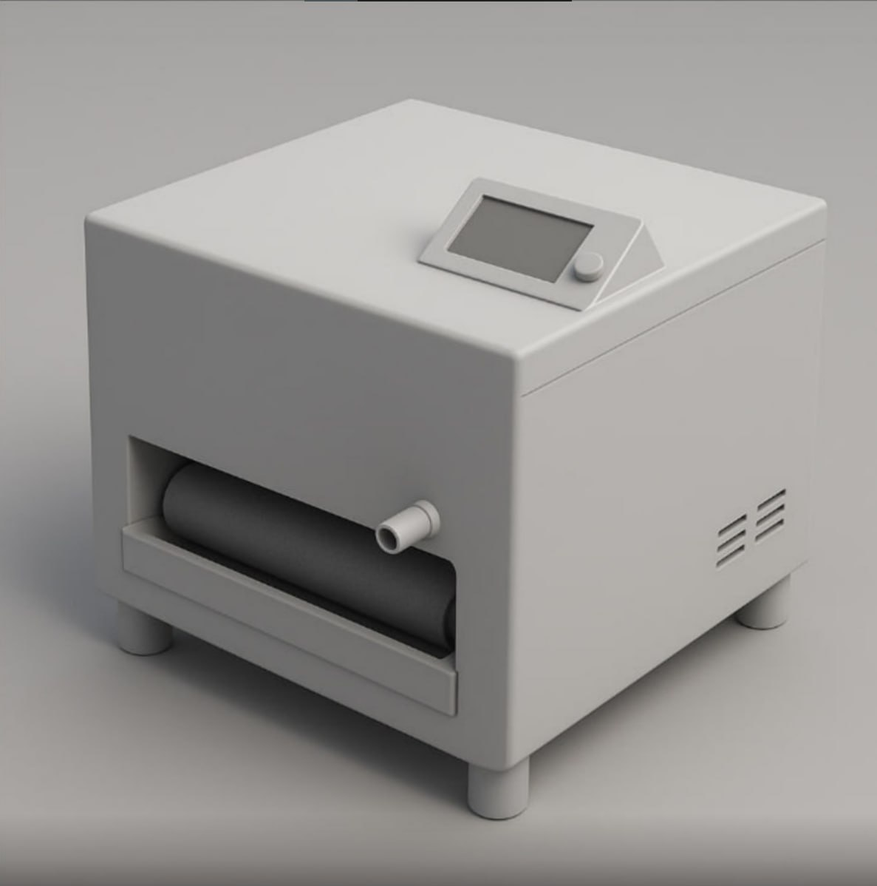

Описание
Аппарат предназначен для быстрой, эффективной и автоматизированной мойки автомобильных ковров без необходимости ручной очистки. Он подходит для: Автомойки и автосервисы – ускорение процесса обслуживания клиентов. Частных пользователей – удобство ухода за салоном автомобиля. Таксопарков и каршеринга – поддержание чистоты в условиях интенсивного использования.
